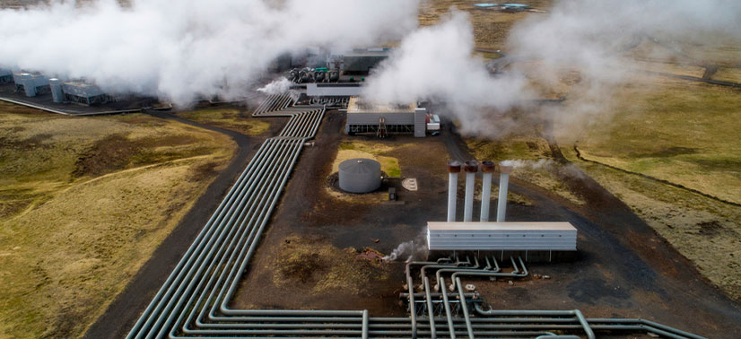

Energia Limpa e Renovável: O Futuro da Energia
Tipos de energias limpas
Energia Solar
O que é energia solar?
A energia solar é a energia obtida pela luz e calor do Sol, convertida em eletricidade ou energia térmica, sendo uma fonte renovável, inesgotável e limpa. Utiliza painéis fotovoltaicos para gerar energia elétrica ou sistemas térmicos para aquecimento, reduzindo custos na conta de luz e emissão de gases estufa.

Energia Eólica
O que é Energia Eólica?
A energia eólica é a transformação da força dos ventos (energia cinética) em energia elétrica, utilizando aerogeradores ou turbinas eólicas. É uma fonte de energia limpa, renovável e inesgotável, fundamental para a redução de gases de efeito estufa e a transição energética.

Hidrelétrica
O que é Hidrelétrica?
Uma usina hidrelétrica é uma instalação que transforma a energia potencial e cinética da água de rios em energia elétrica. Ela utiliza a força da água represada para girar turbinas, que acionam geradores para produzir eletricidade renovável. É uma fonte limpa, mas com grande impacto ambiental pela construção de reservatórios.

Biomassa
O que é Biomassa?
Biomassa é toda matéria orgânica de origem vegetal ou animal utilizada como fonte de energia renovável. Ela transforma resíduos como bagaço de cana, madeira, cascas agrícolas e lixo orgânico em calor, eletricidade ou combustíveis (etanol, biodiesel, biogás). É uma alternativa sustentável que substitui combustíveis fósseis.

Hidrogênio-verde
O que é Hidrôgenio-verde?
O hidrogênio verde é um combustível limpo produzido pela eletrólise da água, utilizando eletricidade de fontes renováveis (solar, eólica ou hídrica). Esse processo separa hidrogênio e oxigênio sem emitir dióxido de carbono, sendo fundamental para a descarbonização de indústrias pesadas e transporte.
Geotérmica
O que é Geotérmica
A energia geotérmica é a energia obtida do calor do interior da Terra. Esse calor pode ser usado para gerar eletricidade ou aquecer ambientes.
